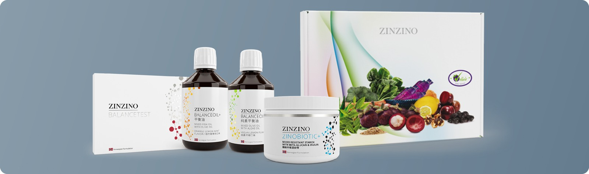

BalanceTest
Your test-based starting point.
OMEGA BALANCE / BNI CROSS-CHAPTER CONNECTIONS
Understand your omega-6 to omega-3 balance. Build a practical nutrition routine based on your test, then track changes over time.
Mikael Chew Zinzino Independent Partner · BNI Sierra Petaling Jaya
01 / TEST-BASED NUTRITION
Omega balance is the starting point. The broader range includes complementary nutrition options, not a requirement to use every product.

Your test-based starting point.
A fish-based omega-3 option.
A plant-based omega-3 option.
A complementary fibre blend.
Explore the wider nutrition range.
02 / YOUR JOURNEY
Already taking omega-3? Start a conversation about what you can measure, rather than simply adding another bottle to the shelf.
Explore the home BalanceTest and what its fatty-acid measurements can tell you about your omega balance.
Discuss food habits and suitable nutrition options, including fish-based and vegan choices.
Keep your routine consistent and discuss retesting after around 120 days to compare your results.
Nutrition education and product support, not medical diagnosis or treatment. Speak with a qualified healthcare professional about medical concerns and individual suitability.
03 / MAKE A USEFUL INTRODUCTION
Working parents already buying omega-3 who want to understand how to assess their omega balance. Health-conscious business owners in their 40s and 50s looking for a practical nutrition conversation.
“I take fish oil, but how do I know where I stand?”
Employers, clubs and community organisers interested in a focused nutrition-awareness session, rather than a general product pitch.
“We’d like a useful wellness session for our people.”
Health-screening centres, insurance agents, financial advisers, trainers, nutritionists and family-focused businesses serving health-conscious customers.
“My clients are asking what their next step could be.”
Please get the person’s permission before introducing us. There is no need to share their medical reports or private health information.
04 / MEET MIKAEL
My background spans field leadership, training and corporate roles in health and wellness. Today, as a Zinzino Independent Partner, I help people explore a test-based approach to nutrition.
I am also the author of The Art of War for Direct Selling: Winning Without Fighting. For fellow networking members, my goal is simple: make it clear who I can help and make introductions easy.
LET’S CONNECT
Ask about omega balance, arrange a BNI one-to-one, discuss a group session or make an introduction.